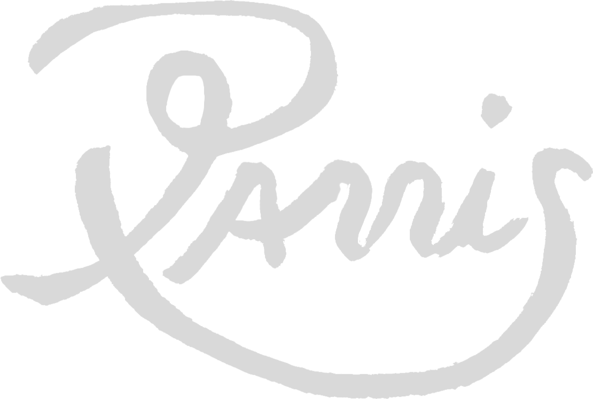

Exercise, sleep and family are my priority. Because if those things aren’t checked, I can’t paint. For me, painting is like playing sports. I enjoy the act of doing it more than the end result. I don’t care for abstract work. There’s too much of it and it’s too reliant on mood. I need something measurable, like sports that require skill, where you can clearly judge what is actually good versus bad. I’m blessed to have found something I can endlessly aim toward, always trying to become better. I struggle to paint. It keeps me honest and grounded because I suck at it. But that’s what makes it fun and gives me an excuse to paint more. Striving for beauty is a struggle and it never comes easy.
